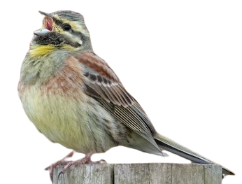
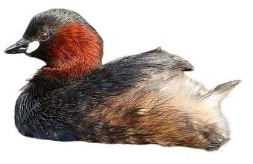
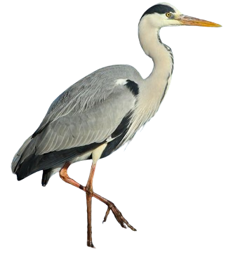
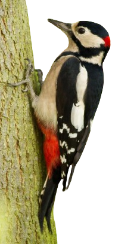
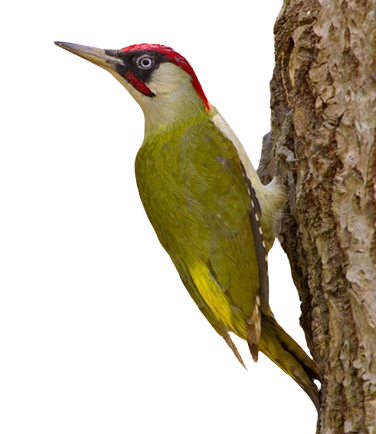

Accenteur mouchet

L'Accenteur mouchet a la taille du Rougegorge familier, mais pas son allure. Il évoque un moineau par son manteau brun chaud marqué de noir, d'où une possible confusion, mais il s'en distingue immédiatement par la finesse de son bec. Chez l'adulte, un gris de cendre envahit la tête et la poitrine, et les flancs présentent des flammèches brun-roux. Sur le dessus, les grandes couvertures et les tertiaires présentent une pointe pâle formant une esquisse de barre sur les premières. L'iris est noisette. Les pattes sont jaunâtres ou rougeâtres, la queue entièrement brun sombre. De loin, il se présente comme un petit oiseau uniformément sombre. Il n'y a pas de dimorphisme sexuel marqué. Le mâle est simplement d'un gris plus appuyé. Il existe de petites différences de couleur suivant les sous-espèces. Le juvénile montre très peu de gris dans le plumage et sa poitrine est fortement striée de brun. Son iris est plus clair ainsi que son bec.
Les huit sous-espèces actuellement décrites ne diffèrent entre elles que par des détails comme un plumage plus ou moins sombre ou un gris de tête plus ou moins étendu et prononcé.

Bruant zizi

Le Bruant zizi mâle ressemble superficiellement au Bruant jaune. La confusion peut venir surtout des femelles et des jeunes. Il est un peu plus petit avec la queue plus courte.
La mâle nuptial se distingue aisément de dos à ses parties supérieures (manteau, couvertures et tertiaires) très châtain et à l'absence de roux vif au croupion qui est gris olive. De face, ce qui frappe est le dessin de la tête et la poitrine. Le premier est très contrasté avec une succession de bandes sombres (calotte grise striée de noir, lores noirs, couvertures auriculaires noirâtres et gorge noire) et de deux bandes jaunes intercalées encadrant le bandeau oculaire sombre. Une tache blanche est visible à l'arrière des parotiques. La poitrine présente un large plastron olive surmonté d'un collier jaune et souligné de deux larges plages châtain remontant vers les poignets. Le ventre est jaune et les flancs légèrement striés. Le bec est bicolore, noir dessus et gris bleuté dessous. Les deux paires externes de rectrices ont du blanc, bien visible seulement en vol ou pendant la toilette, sur leur vexille interne.
La femelle ressemble au mâle, mais en moins coloré. Elle se distingue assez facilement de la femelle du Bruant jaune à ses couvertures châtain, son croupion gris brun, les patrons de tête et de poitrine identiques à ceux du mâle mais moins marqués, moins colorés. Le plumage est plus strié et la gorge est blanche.

Cigogne blanche

La Cigogne blanche est un grand échassier au plumage blanc et noir, sans dimorphisme sexuel. C'est un oiseau bien connu et qui ne passe pas inaperçu dans son environnement.
Le plumage de contour et la queue sont blancs tandis que les ailes sont bicolores. Les rémiges, l'alule, les grandes couvertures et les couvertures primaires supérieures sont noires, le reste blanc. En vue supérieure d'une cigogne en vol, on voit que le noir de l'aile n'est pas homogène, mais que les rémiges primaires internes et les secondaires montrent un net éclaircissement le long du rachis, d'où un aspect strié typique de l'arrière de l'aile. En période nuptiale, des plumes blanches allongées apparaissent à la base du cou.
Le bec, fort et en poignard, est rouge sang, de même que les longues pattes. À la base inférieure du bec, la zone gulaire dénudée est rouge et noire.

Élanion blanc

Petit rapace à grosse tête. Bien qu'il soit de taille inférieure, on le confond souvent avec les busards cendrés et Saint-Martin auxquels il s'apparente un peu à cause de colorations blanche, grise et noire. Toutefois, la silhouette est plus trapue et la queue plus arrondie.
L'Élanion blanc est gris et blanc avec les épaules noires et les yeux rouge foncé.
Les parties inférieures sont blanches.
La tête est blanche, avec un petit masque noir autour de l'oeil. Le bec est plutôt court. Le bec est noir avec la cire jaune. Les yeux sont rouge foncé. Les pattes courtes et nues et les doigts sont jaunes.
Les deux sexes sont semblables.

Grèbe castagneux

Autrefois appelé Petit Grèbe (comme sa traduction anglaise) ou Grébions en Suisse, le Grèbe castagneux est le plus petit de nos grèbes européens. C'est un oiseau exclusivement aquatique d'apparence compacte et trapue. Son cou souvent rentré dans les plumes est surmonté d'une petite tête ronde. Son plumage est généralement brun sombre sur le dessus, tandis que les flancs peuvent présenter des touches de châtain et de fauve plus ou moins clair, avec des variations saisonnières.
En période nuptiale, le Grèbe castagneux se distingue par un dos brun-noir et un capuchon de même couleur s'étendant du haut de la gorge à l'arrière de l'œil, contrastant avec le châtain-roux de la nuque et des joues. Cette caractéristique est particulièrement distinctive et permet de l'identifier rapidement parmi d'autres espèces de grèbes. Cette couleur châtain-roux est à l'origine de son nom "castagneux". Les rémiges sont teintées de gris-brun, avec une quantité variable de blanc sur les secondaires. Les yeux sont d'un brun foncé, et le bec est noir avec une petite pointe blanchâtre à son extrémité. Une tache jaune pâle, parfois tirant vers le bleu-vert pâle, est souvent bien visible à la commissure du bec. Les pattes sont d'un gris-vert foncé.

Grive musicienne

La Grive musicienne est d'une taille un peu inférieure à celle du Merle noir qu'elle côtoie souvent, mais la confusion n'est pas possible. C'est un oiseau plus trapu, avec une queue plus courte et un plumage plus clair. Les parties supérieures sont d'un brun assez chaud et sont assez uniformes d'aspect. Une nuance roussâtre est perceptible sur la calotte et les ailes tandis que le bas du dos, le croupion et les sus-caudales paraissent un peu plus gris. L'œil sombre est cerclé de pâle, ce qui le fait paraître grand. Le sourcil chamois est très peu marqué, ce qui la distingue de sa cousine mauvis. Les couvertures auriculaires chamois sont entourées de brun.
Enfin, les traits malaires noirâtres, bien marqués, se rejoignent sous la gorge pour former une sorte de collier tacheté. Les parties inférieures sont roussâtres sur la poitrine et les flancs, et blanc-crème sur le ventre et les sous-caudales. Des taches brun-noir en forme de V, ou de cœur, renversés, constellent la poitrine, le haut du ventre et les flancs. Les pattes sont roses. le bec est brunâtre avec la base de la mandibule inférieure jaune. Au vol, on distingue les couvertures sous-alaires orange pâle.

Héron cendré

Le Héron cendré est un de nos plus grands Ardéidés, le plus grand d'Europe. On le reconnaît justement à sa grande taille, à sa teinte grise et, au vol, à sa silhouette particulière.
Le plumage est gris moyen sur les parties supérieures et blanc dessous. Les plumes de vol, rémiges et rectrices, sont noirâtres, d'où un contraste typique entre elles et le reste du corps qui se voit bien en vol.
Le plumage gagne en netteté chez l'adulte. Les bords de la calotte deviennent bien noirs et se prolongent en petite huppe. Le bec jaunit, le devant du cou égrène de nettes stries noires, une tache blanche apparaît au poignet au-dessus des petites couvertures noires, les scapulaires s'allongent, les pattes s'éclaircissent. C'est ce plumage qui prévaut une grande partie de l'année, mais dans le courant de l'hiver, le plumage nuptial va se développer chez l'adulte reproducteur.
Le bec devient jaune orange, les lores bleuissent, la huppe noire s'allonge, de longues plumes ornementales poussent au bas du cou et au niveau des scapulaires, les pattes jaunissent encore. Le mâle se distingue alors de la femelle par ses teintes plus vives. Tous ces atours contribueront à la mise en valeur de l'adulte au moment des parades nuptiales.
Le juvénile et l'immature ont un plumage qui ressemble à celui de l'adulte inter-nuptial, mais plus terne, avec la partie supérieure du bec et les pattes sombres.

Pic épeiche

Le Pic épeiche est le plus commun et le plus répandu des pics dits bigarrés, au plumage coloré de noir, blanc et rouge.
Le dimorphisme sexuel est faible. Le mâle adulte se distingue à sa zone occipitale rouge cramoisi alors qu'elle est noire chez la femelle.
Les parties supérieures (manteau, dos, croupion et sus-caudales) sont noires. Les ailes noires présentent une large tache blanche sur les épaules, formée par les scapulaires externes et les grandes et moyennes couvertures internes. Toutes les rémiges sont noires et munies de taches blanches sur leur longueur formant barres alaires. Les deux paires de rectrices centrales sont noires et les trois paires externes de plus en plus blanches de l'intérieur vers l'extérieur.
La tête porte une calotte noire entre le front beige roussâtre clair et l'arrière rouge ou noir. Les côtés de la tête et du cou sont blancs, marqués d'un Y noir dont les branches rejoignent respectivement le bec (en une moustache noire), la nuque et la poitrine (la branche inférieure amorçant un bandeau pectoral). Une bride noire joint la nuque au manteau, noir lui aussi.
Les parties inférieures sont blanches, excepté le bas-ventre et les sous-caudales rouge cramoisi.
Le bec, fort et pointu, est noir. Les yeux rouge sombre ressortent bien dans la zone lorale blanche. Les fortes pattes griffues sont grises.

Pic vert

Le Pic vert est un pic d'assez grande taille, au plumage à dominante verte qui lui a donné son nom. C'est ce qu'on remarque en premier quand on est confronté à cette espèce. Ensuite, c'est le rouge vif de la tête qui saute aux yeux.
Le vert nettement nuancé de jaune couvre le dessus du corps, de la nuque à la queue, ainsi que les couvertures alaires. Le croupion et les sus-caudales apparaissent nettement plus jaunes. Les rémiges et les rectrices, d'un brun grisâtre, sont nettement barrées de noirâtre. Les rémiges secondaires et tertiaires sont largement ourlées de vert-jaune.
Les parties inférieures sont d'un blanc grisâtre avec une nuance jaune qui augmente en intensité de l'avant vers l'arrière. Ainsi, la gorge et les joues sont blanchâtres tandis que le bas ventre est nettement jaune, mais il y a des variations individuelles. Les plumes de l'arrière des flancs et les sous-caudales, jaunâtres et bordées de noirâtre, donnent un aspect écailleux.
La tête tricolore, rouge, noir et blanc, est remarquable. Les deux sexes possèdent une calotte rouge vif qui gagne la nuque, une couleur noire sur les lores, le pourtour des yeux et les moustaches, enfin la gorge et les parotiques blanchâtres. L'iris blanc ressort bien sur la joue noire. Le bec est jaunâtre ou corne, à pointe sombre.

Sittelle torchepot

La Sittelle torchepot est un oiseau facile à reconnaître au plumage et au comportement, et ce d'autant plus qu'elle est le plus souvent la seule de son genre présente à un endroit donné.
Chez elle, le dimorphisme sexuel est faible et le juvénile est à peine plus terne que l'adulte. En revanche, l'aspect général peut être très différent suivant les sous-espèces qui sont au nombre de 21. Nous décrirons ici la sous-espèce caesia qui occupe l'Europe tempérée et à laquelle un observateur est le plus souvent confronté.
Les parties supérieures, du bec au bout de la queue, sont d'un gris-bleu assez clair, le bleu ressortant particulièrement en bonne lumière et sous un ciel bleu, le gris s'imposant plus en sous-bois, l'habitat de l'oiseau. Les ailes et les rectrices externes (les centrales sont concolores au dessus du corps) sont d'un gris-brun sombre avec des liserés gris-bleu qui rendent le plumage de l'oiseau uniforme au repos. Ce n'est qu'au vol ou lors de la toilette qu'on peut voir que les 3 paires de rectrices externes ont du blanc à leur extrémité.
Les parties inférieures sont rousses de la gorge au ventre, l'intensité augmentant de l'avant vers l'arrière. La gorge et les côtés de la tête sont blancs. Les flancs sont nettement châtains, surtout chez le mâle. Les sous-caudales bicolores, blanches et châtaines, ont un aspect écailleux.
Un bandeau noir de pirate typique court de chaque côté de la tête, du bec à l'attache des ailes en passant par les lores et les yeux qu'il englobe puis se prolongeant vers l'arrière en s'incurvant. L'œil sombre est peu visible car inclus dans le bandeau. Le bec, long et pointu, évoque celui d'un pic. Il est noir avec la base de la mandibule inférieure gris-bleu pâle. Les pattes aux doigts très griffus sont grisâtres à brunâtres.
La femelle a le bandeau moins marqué, le dessous plus pâle, particulièrement les flancs, mais la distinction n'est pas aisée. Le juvénile ressemble à la femelle, mais son bandeau est moins défini et nuancé de brun, le plumage est plus terne, les pattes plus pâles.